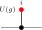
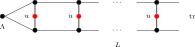
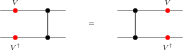

Symmetries and String Order
This chapter collects the symmetry-theoretic consequences of the MPS Fundamental Theorem [ PGVWC07 ] , following the symmetry analysis of [ PGWS\(^{+}\)08 ] . For injective tensors, physical on-site symmetries determine virtual gauges, those gauges define projective representations on the bond space, and virtual intertwiners enter the string-order criteria.
Physical Symmetries Give Virtual Gauges
MPSTensor.rotatePhysical def:mps_tensor Given a matrix \(u \in M_{d}(\mathbb {C})\) and an MPS tensor \(A\), the physical-index rotation is the tensor \((A_u)^i := \sum _j u_{ij}\, A^j\).
MPSTensor.zGaugeEquiv_of_isIrreducibleForm_sameMPV_rotatePhysical def:rotate_physical, def:irreducible_form, def:same_mpv, thm:periodic_ft Let \(A\) be in irreducible form II and let \(u\) be a matrix such that \(B := A_u\) is also in irreducible form II and \(\mathcal{V}(A) = \mathcal{V}(B)\). Then there exists \(m {\gt} 0\) such that \(A\) and \(B\) are gauge equivalent up to an \(m\)-th root of unity.
Virtual Representation Theorem
With a full group of on-site symmetries (rather than just a single unitary), the resulting gauges determine a projective representation on the bond space.
MPSTensor.twistedTensor def:mps_tensor Given a group representation \(U : G \to \mathrm{GL}_{d}(\mathbb {C})\) on the physical index, the \(g\)-twisted tensor is defined, for each \(i \in \{ 0,\ldots ,d{-}1\} \), by
MPSTensor.IsOnSiteSymmetric def:twisted_tensor, def:same_mpv A tensor \(A\) is on-site symmetric under a group representation \(U : G \to \mathrm{GL}_{d}(\mathbb {C})\) if \(\mathcal{V}(A) = \mathcal{V}(\widetilde{A}_g)\) for every \(g \in G\).
MPSTensor.twistedTensor_mul def:twisted_tensor The twisted tensor satisfies the composition law
i.e. twisting by \(gh\) is the same as first twisting by \(h\) and then by \(g\).
MPSTensor.twistedTensor_one def:twisted_tensor Twisting by the identity group element is trivial: \(\widetilde{A}_1 = A\).
MPSTensor.gaugeEquiv_twistedTensor_of_injective def:injective, def:on_site_symmetric If \(A\) is injective and on-site symmetric under \(U\), then for every \(g \in G\) the twisted tensor \(\widetilde{A}_g\) is gauge equivalent to \(A\).
thm:ft_single, lem:gauge_equiv_twisted, lem:gauge_unique_up_to_scalar, lem:twisted_tensor_mul, thm:virtual_rep_injective The injective virtual-representation theorem is not proved from string-order rigidity. The on-site symmetry condition first identifies \(A\) and \(\widetilde{A}_g\) as the same MPV family; the single-block Fundamental Theorem gives the gauge in Lemma .7. Gauge uniqueness and the twist composition law then give Theorem .15. The string-order results later in this chapter use this virtual representation as an input.
MPSTensor.virtual_symmetry_eq def:injective, def:on_site_symmetric, lem:gauge_equiv_twisted If \(A\) is injective and on-site symmetric under \(U\), then for every \(g \in G\) there exist an invertible matrix \(X(g) \in \mathrm{GL}_{D}(\mathbb {C})\) and a nonzero scalar \(\varphi (g) \in \mathbb {C}^{\times }\) (in fact \(\varphi = 1\) in the single-block case) such that \(\widetilde{A}_g^{\, i} = \varphi (g)\, X(g)\, A^i\, X(g)^{-1}\) for all \(i\).

\(\leadsto \)
Apply Lemma .7 to obtain \(X(g)\), then set \(\varphi (g) = 1\).
MPSTensor.gauge_unique_up_to_scalar def:injective, def:gauge_equiv, lem:center_scalar Let \(A\) be an injective tensor. If \(X, Y \in \mathrm{GL}_{D}(\mathbb {C})\) both satisfy \(B^i = X\, A^i\, X^{-1} = Y\, A^i\, Y^{-1}\) for all \(i\), then there exists a nonzero scalar \(u \in \mathbb {C}^{\times }\) such that \(Y = u \cdot X\).
MPSTensor.gauge_unique_up_to_scalar_of_sameMPV def:injective, def:same_mpv Let \(A\) be an injective tensor and assume that \(A\) and \(B\) generate the same MPV family. If \(X, Y \in \mathrm{GL}_{D}(\mathbb {C})\) both satisfy \(B^i = X\, A^i\, X^{-1} = Y\, A^i\, Y^{-1}\) for all \(i\), then there is a nonzero scalar \(u \in \mathbb {C}^{\times }\) such that \(Y = u \cdot X\).
TNLean.Algebra.ScalarCocycle A scalar 2-cochain on a group \(G\) is a function \(\omega : G \times G \to \mathbb {C}^{\times }\).
TNLean.Algebra.ProjectiveRepresentation def:scalar_cocycle Given a scalar 2-cochain \(\omega \), a projective representation of \(G\) on \(\mathbb {C}^D\) is a map \(\rho : G \to \mathrm{GL}_{D}(\mathbb {C})\) satisfying, for all \(g,h \in G\),
TNLean.Algebra.ProjectiveRepresentation.cocycle_of_assoc def:projective_rep, def:scalar_cocycle If \(\rho \) is a projective representation with factor system \(\omega \) and \(D {\gt} 0\), then \(\omega \) satisfies the 2-cocycle identity:
MPSTensor.virtual_rep_of_symmetric_injective def:injective, def:on_site_symmetric, def:projective_rep, def:scalar_cocycle, lem:gauge_unique_up_to_scalar, lem:twisted_tensor_mul Let \(A\) be an injective MPS tensor that is on-site symmetric under a group representation \(U : G \to \mathrm{GL}_{d}(\mathbb {C})\). Then there exist:
a scalar 2-cochain \(\omega : G \times G \to \mathbb {C}^{\times }\), and
a map \(\rho : G \to \mathrm{GL}_{D}(\mathbb {C})\) satisfying, for all \(g,h \in G\),
\[ \rho (g)\, \rho (h) = \omega (g,h)\, \rho (gh). \]
such that, defining the gauge matrices \(X(g) := \rho (g^{-1})\), one has, for every \(g \in G\) and \(i \in \{ 0,\ldots ,d{-}1\} \),
In tensor-network notation, for each fixed \(g\) this is the local gauge relation
with the black node denoting the tensor named in the surrounding formula and the two red side nodes acting on the virtual legs. In particular, \(\rho \) is a projective representation of \(G\) on the bond space \(\mathbb {C}^D\).
By functoriality (Lemma .5), the product \(X(h)\, X(g)\) also intertwines \(A\) with \(\widetilde{A}_{gh}\). Since \(X(gh)\) does the same, gauge uniqueness (Lemma .10) gives a nonzero scalar \(\omega '(h,g)\) with \(X(h)\, X(g) = \omega '(h,g)\, X(gh)\).
Defining \(\rho (g) := X(g^{-1})\) converts this to the standard law: \(\rho (g)\, \rho (h) = \omega (g,h)\, \rho (gh)\) where \(\omega (g,h) := \omega '(h^{-1}, g^{-1})\).
MPSTensor.virtual_rep_of_symmetric_injective_cocycle thm:virtual_rep_injective, lem:cocycle_of_assoc If \(D {\gt} 0\), the factor system \(\omega \) from Theorem .15 satisfies the 2-cocycle identity for all \(g,h,k \in G\):
Cohomology Classes of Virtual Symmetry Cocycles
Two cocycles may differ by a coboundary yet represent the same projective-representation class. The following definitions and results make this precise and establish the quotient \(H^2(G,\mathbb {C}^{\times })\).
TNLean.Algebra.ScalarCocycle.IsCoboundary def:scalar_cocycle A scalar 2-cocycle \(\omega \) is a coboundary if there exists \(\varphi \colon G \to \mathbb {C}^{\times }\) such that, for all \(g,h \in G\),
TNLean.Algebra.ScalarCocycle.CohomologousTo def:scalar_cocycle Two cocycles \(\omega _1,\omega _2\) are cohomologous (written \(\omega _1 \sim \omega _2\)) if there exists \(\varphi \colon G \to \mathbb {C}^{\times }\) such that, for all \(g,h \in G\),
TNLean.Algebra.ScalarCocycle.CohomologousTo.equivalence def:cohomologous_to The relation “cohomologous to” is reflexive, symmetric, and transitive on the set of scalar 2-cocycles.
TNLean.Algebra.ScalarCocycle.isCoboundary_iff_cohomologousTo_one def:is_coboundary, def:cohomologous_to A cocycle \(\omega \) is a coboundary if and only if \(\omega \sim \mathbb {1}\), where \(\mathbb {1}(g,h) = 1\) for all \(g,h\).
MPSTensor.cohomologousTo_of_isInjective thm:virtual_rep_injective, lem:gauge_unique_up_to_scalar, def:cohomologous_to If the bond dimension satisfies \(D \ge 1\) and two projective representations \(\rho _1,\rho _2\) (with cocycles \(\omega _1,\omega _2\)) both arise as virtual representations of the same injective MPS tensor \(A\) under an on-site symmetry \(U\), then \(\omega _1 \sim \omega _2\).
describe the same twisted tensor, so they differ by a scalar. Substituting into the projective law and cancelling \(X_1(g\cdot h)\) yields \(\omega _2(g,h) = f(g)\, f(h)\, f(gh)^{-1} \omega _1(g,h)\).
TNLean.Algebra.ScalarCocycle.IsCocycle A scalar 2-cochain \(\omega \colon G \times G \to \mathbb {C}^{\times }\) is a 2-cocycle if it satisfies, for all \(g,h,k \in G\),
TNLean.Algebra.H2 def:cohomologous_to, def:is_cocycle The second cohomology set is the quotient
where \(\sim \) is the coboundary-equivalence relation.
TNLean.Algebra.ProjectivelyEquivalent def:projective_rep, def:cohomologous_to Two projective representations are projectively equivalent when their factor systems are cohomologous.
TNLean.Algebra.projRep_equiv_iff_cohomologous def:projectively_equivalent, def:cohomologous_to Let \(\rho _1,\rho _2\) be projective representations with factor systems \(\omega _1,\omega _2\). Then
Permutation-Based Physical Symmetry
The linear-combination twist \(\widetilde{A}_g^i = \sum _j U(g)_{ij}\, A^j\) is the standard form used in the virtual representation theorem. The following alternative formulation replaces the matrix action by a permutation of the physical index; it is useful for symmetries that act by reordering basis states rather than by a general linear map.
MPSTensor.OnSiteSymmetry An on-site symmetry datum for a group \(G\) on a physical space of dimension \(d\) consists of a matrix-valued map \(u : G \to M_{d}(\mathbb {C})\) and a physical-index action \(\sigma : G \to \mathrm{End}(\{ 0,\ldots ,d{-}1\} )\).
MPSTensor.TwistedTensor def:on_site_symmetry_perm, def:mps_tensor Given an on-site symmetry datum \((u, \sigma )\), the permutation-twisted tensor at group element \(g\) is
In tensor-network notation the local tensor is unchanged and only the physical leg is relabelled:

MPSTensor.TwistedTensor_one def:perm_twisted_tensor If \(\sigma (1) = \id \), then \((A^{\sigma _1})^i = A^i\) for all \(i\).
Composition order. The linear-combination twist (Lemma .5) composes as \(\widetilde{(\widetilde{A}_h)}_g = \widetilde{A}_{gh}\), applying \(h\) first then \(g\). The permutation twist below uses the same left-action convention \(\sigma (gh) = \sigma (g) \circ \sigma (h)\), so \((A^{\sigma _g})^{\sigma _h} = A^{\sigma _{gh}}\); the inner permutation \(\sigma (h)\) acts first on the index.
MPSTensor.TwistedTensor_mul def:perm_twisted_tensor If \(\sigma (gh) = \sigma (g) \circ \sigma (h)\) for all \(g, h \in G\), then

String Order and Local Symmetry Equivalence
The string order parameter [ PGWS\(^{+}\)08 ] detects whether an on-site unitary \(u\) acts as a local symmetry on the state generated by an injective MPS tensor.
MPSTensor.twistedTransferMap def:mps_tensor Given an MPS tensor \(A\) and a physical-index matrix \(u\), the twisted transfer map is
Diagrammatically one inserts the physical operator \(u\) on the doubled local transfer cell:

The upper and lower black nodes denote \(A_n\) and \(A_{n'}^\dagger \), and the red node labelled \(u\) couples the physical legs.
MPSTensor.stringOrderParam def:twisted_transfer_map The string order parameter for twist \(u\) and stationary state \(\Lambda \) at length \(L\) is
In tensor-network notation this is the length-\(L\) doubled chain with a copy of \(u\) inserted on each physical rung:

The boundary matrix \(\Lambda \) is contracted into the virtual boundary, the red nodes labelled \(u\) sit on the physical rungs, and the right boundary is traced.
MPSTensor.stringOrderBoundaryParam def:twisted_transfer_map, def:string_order_param For a boundary state \(\Lambda \) and boundary matrices \(X,Y \in M_{D}(\mathbb {C})\), the boundary string order parameter is
The ordinary string order parameter is the special case \(X=Y=\mathbb {1}\).
MPSTensor.IsLocalSymmetry def:mps_tensor An MPS tensor \(A\) has local symmetry under a unitary \(u\) with respect to a boundary state \(\Lambda \) if there exist a unitary matrix \(V\) and a phase \(\mu \) with \(|\mu | = 1\) such that \(V^\dagger \Lambda V = \Lambda \) and, for every physical index \(i\),
The unitary \(V\) intertwines the physical action of \(u\) with a virtual conjugation, and the boundary state \(\Lambda \) is invariant under \(V\).
MPSTensor.HasStringOrder def:string_order_boundary_param String order exists for \(u\) with respect to a boundary state \(\Lambda \) if there exist boundary matrices \(X, Y\) and a positive constant \(c {\gt} 0\) such that \(c \le \| R_L(u;X,Y)\| \) for all \(L\), where \(R_L(u;X,Y)\) is the boundary-refined string-order parameter. Thus some boundary-refined string-order sequence does not decay to zero.
MPSTensor.not_tendsto_zero_of_hasStringOrder def:has_string_order If \(A\) has string order for \(u\) with respect to a boundary state \(\Lambda \), then for some boundary matrices \(X,Y\) the sequence \(R_L(u;X,Y)\) does not tend to \(0\) as \(L \to \infty \).
MPSTensor.CondC1 def:mps_tensor The local physical intertwining relation is \(\sum _j u_{ij}\, A^j = V\, A^i\, V^\dagger \). Locally, the physical action of \(u\) can therefore be pushed to the virtual legs:

MPSTensor.CondC2 def:transfer_map Transfer-map covariance is the identity that the transfer map commutes with virtual conjugation: \(\mathcal{E}(V X V^\dagger ) = V\, \mathcal{E}(X)\, V^\dagger \). In doubled-layer notation, the virtual operators slide through the local transfer cell:

MPSTensor.CondC3 def:twisted_transfer_map In the transfer-map language, the commutation of the doubled transfer matrix \(E = \sum _i A_i \otimes \bar A_i\) with \(V \otimes \bar V\) is
MPSTensor.condC2_iff_condC3 def:condC2, def:condC3 Transfer-map covariance and commutation in the doubled transfer picture are equivalent for any matrix \(V\).
The two formulas are the same identity read from opposite sides.
MPSTensor.unitary_kraus_mixing If \(u\) is unitary, then replacing Kraus operators \(\{ A_i\} \) by their unitary mixtures \(\{ \sum _j u_{ij} A_j\} \) preserves the channel:
MPSTensor.condC1_imp_condC2 def:condC1, def:condC2, lem:unitary_kraus_mixing If \(V\) and \(u\) are unitary and the local physical intertwining relation holds, then the transfer map is covariant.
one inserts \(V^\dagger V = \mathbb {1}\) so that each local transfer cell is written in terms of conjugated Kraus operators, then replaces those operators using the intertwining relation. After that, the physical \(u\)-boxes disappear by the unitary Kraus-mixing identity.
MPSTensor.condC2_imp_condC1_of_injective def:condC2, def:condC1, def:injective For an injective MPS, if \(V\) is unitary and the transfer map is covariant, then there exists a unitary \(u\) satisfying the local physical intertwining relation.
implies that the two Kraus families \(B\) and \(A\) define the same transfer map. Kraus freedom for equal channels converts \(\mathcal{E}_B = \mathcal{E}_A\) into a unitary Kraus mixing matrix \(u\) with \(B^i = \sum _j u_{ij} A^j\).
MPSTensor.twistedMixedCompanion def:mps_tensor For an MPS tensor \(A\) and a physical-index matrix \(u\), define the companion tensor \(B_u\) by
MPSTensor.twistedTransferMap_eq_mixedTransfer def:twisted_transfer_map, def:twisted_mixed_companion, def:mixed_transfer The twisted transfer map of \(A\) is the mixed transfer operator of the pair \((A,B_u)\):
MPSTensor.twistedTransfer_spectralRadius_le_one def:twisted_transfer_map, def:injective Let \(A\) be an injective MPS tensor with \(\mathcal{E}_A(\mathbb {1})=\mathbb {1}\), and let \(u\) satisfy \(u u^\dagger = \mathbb {1}\). If
for some nonzero \(X \in M_{D}(\mathbb {C})\), then \(|\lambda | \le 1\).
MPSTensor.twistedTransfer_modulus_one_implies_gaugePhase def:twisted_transfer_map, def:twisted_mixed_companion, def:gauge_phase_equiv, def:injective Let \(A\) be an injective MPS tensor with \(\mathcal{E}_A(\mathbb {1})=\mathbb {1}\), and let \(u\) satisfy \(u u^\dagger = \mathbb {1}\). If
for some nonzero \(X \in M_{D}(\mathbb {C})\) with \(|\lambda |=1\), then \(A\) is gauge-phase equivalent to the companion tensor \(B_u\).
MPSTensor.stringOrderBoundaryParam_tendsto_zero_of_spectralRadius_lt_one def:string_order_boundary_param, def:twisted_transfer_map If \(\rho (\mathcal{E}_u) {\lt} 1\), then, as \(L \to \infty \), for all boundary matrices \(X,Y,\Lambda \in M_{D}(\mathbb {C})\) one has
MPSTensor.gaugePhaseEquiv_twisted_of_hasStringOrder def:has_string_order, def:twisted_mixed_companion, def:gauge_phase_equiv, def:injective Let \(A\) be injective, let \(\Lambda \in M_{D}(\mathbb {C})\), and assume \(u u^\dagger = \mathbb {1}\) and \(\mathcal{E}_A(\mathbb {1})=\mathbb {1}\). If string order exists for \(u\) with boundary parameter \(\Lambda \), then \(A\) is gauge-phase equivalent to the companion tensor \(B_u\).
MPSTensor.virtualUnitary_of_gaugePhaseEquiv_twisted def:gauge_phase_equiv, def:twisted_mixed_companion, def:injective Let \(A\) be injective, assume \(u u^\dagger = \mathbb {1}\) and \(\mathcal{E}_A(\mathbb {1})=\mathbb {1}\). If \(A\) is gauge-phase equivalent to the companion tensor \(B_u\), then there exist a unitary \(V\) and a phase \(\mu \) with \(|\mu |=1\) such that, for every physical index \(i\),
MPSTensor.twistedTransfer_eigen_of_virtualUnitary def:twisted_transfer_map Assume \(\mathcal{E}_A(\mathbb {1})=\mathbb {1}\) and that, for every physical index \(i\),
with \(V\) unitary. Then \(V\) is an eigenmatrix of the twisted transfer map:
MPSTensor.boundaryState_invariant_of_virtualUnitary def:injective Let \(A\) be injective, assume \(u u^\dagger = \mathbb {1}\), and let \(\Lambda \) be a positive definite boundary state with \(\tr (\Lambda )=1\) and \(\mathcal{E}_A^\dagger (\Lambda )=\Lambda \). If \(V\) is a unitary and \(\mu \) a phase satisfying, for every physical index \(i\),
then
MPSTensor.hasStringOrder_of_localSymmetry def:local_symmetry, def:has_string_order Assume \(\tr (\Lambda )=1\) and \(\mathcal{E}_A(\mathbb {1})=\mathbb {1}\). If \(u\) is a local symmetry of \(A\) with respect to \(\Lambda \), then string order exists for \(u\).
whose norm is constantly \(1\).
MPSTensor.localSymmetry_iff_spectralRadius_one def:local_symmetry, def:twisted_transfer_map, def:injective, thm:twisted_transfer_spectral_radius_le_one Let \(A\) be injective, and assume \(u u^\dagger = \mathbb {1}\), \(\mathcal{E}_A(\mathbb {1})=\mathbb {1}\), \(\Lambda \) is positive definite, \(\tr (\Lambda )=1\), and \(\mathcal{E}_A^\dagger (\Lambda )=\Lambda \). Then \(u\) is a local symmetry if and only if there exist a unitary \(V \in M_{D}(\mathbb {C})\) and a phase \(\mu \) with \(|\mu |=1\) such that
By Theorem .45, this witness form is equivalent to the peripheral-spectrum condition \(\rho (\mathcal{E}_u)=1\).
MPSTensor.stringOrder_iff_localSymmetry def:has_string_order, def:local_symmetry, def:injective For an injective MPS, assume \(u u^\dagger = \mathbb {1}\), \(\mathcal{E}_A(\mathbb {1})=\mathbb {1}\), \(\Lambda \) is positive definite, \(\tr (\Lambda )=1\), and \(\mathcal{E}_A^\dagger (\Lambda )=\Lambda \). Then string order for \(u\) exists iff \(u\) is a local symmetry.
MPSTensor.virtualUnitary_of_stringOrder def:has_string_order, def:injective For an injective MPS, let \(\Lambda \in M_{D}(\mathbb {C})\), and assume \(u u^\dagger = \mathbb {1}\) and \(\mathcal{E}_A(\mathbb {1})=\mathbb {1}\). If string order exists for \(u\) with boundary parameter \(\Lambda \), then there exists a virtual unitary \(V\) and a unit-modulus scalar \(\mu \) such that \(\sum _j u_{ij} A^j = \mu \, V A^i V^\dagger \) for all \(i\). Diagrammatically this is the same local intertwining relation, but only up to an overall unit scalar on the virtual side:
SPT Phase Classification
Two injective symmetric tensors belong to the same symmetry-protected topological phase when their virtual representation cocycles are cohomologous [ CGW11 ] .
MPSTensor.IsSameSPTPhase def:cohomologous_to, def:projective_rep Injective tensors \(A\) and \(B\), both symmetric under an on-site representation \(U \colon G \to \mathrm{GL}_{d}(\mathbb {C})\), are in the same SPT phase if there exist virtual cocycles \(\omega _A,\omega _B\) with corresponding projective representations that intertwine the respective twisted tensors and satisfy \(\omega _A\sim \omega _B\) (cohomologous).
MPSTensor.hasStringOrder_of_symmetric_injective def:has_string_order, thm:virtual_rep_injective Let \(A\) be an injective tensor, symmetric under a unitary representation \(U\). Assume \(\mathcal{E}_A(\mathbb {1})=\mathbb {1}\), \(\Lambda \) is positive definite, \(\tr (\Lambda )=1\), and \(\mathcal{E}_A^\dagger (\Lambda )=\Lambda \). Then string order exists for every group element \(g\).
MPSTensor.stringOrder_invariant_of_samePhase def:is_same_spt_phase, thm:has_string_order_of_symmetric_injective If \(A\) and \(B\) are injective, both on-site symmetric under a unitary representation \(U\), and if \(\mathcal{E}_A(\mathbb {1})=\mathbb {1}\), \(\mathcal{E}_B(\mathbb {1})=\mathbb {1}\), \(\Lambda _A\) and \(\Lambda _B\) are positive definite, \(\tr (\Lambda _A)=1\), \(\tr (\Lambda _B)=1\), \(\mathcal{E}_A^\dagger (\Lambda _A)=\Lambda _A\), and \(\mathcal{E}_B^\dagger (\Lambda _B)=\Lambda _B\), then for every \(g \in G\), string order exists for \(A\) with twist \(U(g)\) if and only if it exists for \(B\). In particular, since Definition .56 implies on-site symmetry for both tensors, this theorem applies to tensors in the same SPT phase.